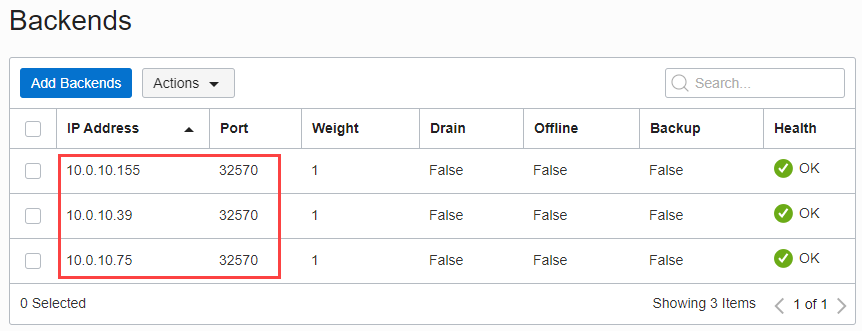
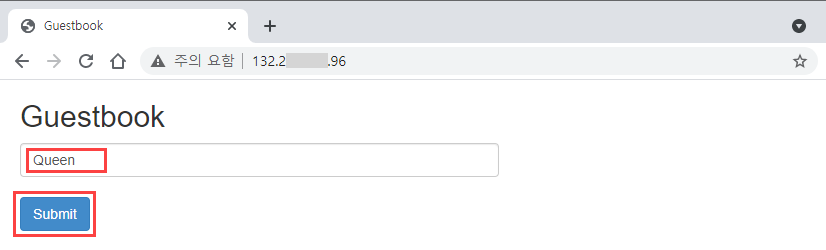

OCI OKE - MongoDB 기반 방명록 애플리케이션 배포
by Velucid ⏲ May 18, 2021
Topics
OCI OKE(Oracle Kubernetes Engine) 따라하기
OCI OKE 운영을 위한 기본 환경 구성
OCI OKE에 애플리케이션 배포하기
- OCI Registry: Container Image 등록 및 안전한 배포
- MongoDB 기반 방명록(PHP) 애플리케이션 배포
- NEW ML 분석 : Zeppelin/PySpark 구성 및 배포
- NEW ML 분석 : Zeppelin/PySpark 기반 적립카드 발급 대상 분석
- TBD : OCI Block Volume을 통한 Persistent Volume 구축
- TBD : OCI Autonomous Database와의 안전한 연결 구축
내용 설명
OCI OKE(Oracle Kubernetes Engine)에서 Guestbook(방명록) 애플리케이션을 배포하는 과정을 보여드립니다.
OCI Load Balancer를 통해 외부 사용자의 접근이 가능하며, 이는 3 개의 Replica로 구성된 PHP 기반 Guestbook으로 트래픽을 분배합니다. 방문 이력 데이터는 MongoDB에 저장/관리 됩니다.
Guestbook 애플리케이션의 서비스 구조
1) MongoDB 배포 및 구성 확인
먼저, MongoDB를 Cluster에 배포하는 과정을 살펴 봅니다. NAT Gateway를 통해 Docker Hub를 통해서 직접 MongoDB 이미지를 가져옵니다.
참고: 외부 접근이 불가능한 환경에서는, 도커 이미지를 OCI Repository에 등록하여, 보다 안전하게 관리하고 사용할 수 있습니다.
MongoDB 이미지는 Docker Hub에 공식 등록된 mongo:4.2를 사용합니다.
- MongoDB deployment menifest 파일 생성
$ cat mongo-deployment.yamlxxxxxxxxxxapiVersionapps/v1kindDeploymentmetadata namemongo labels appmongo tierbackendspec selector matchLabels appmongo tierbackend replicas1 template metadata labels appmongo tierbackend spec containersnamemongo imagemongo4.2 args--bind_ip0.0.0.0 resources requests cpu100m memory100Mi portscontainerPort27017- MongoDB Pod 배포
xxxxxxxxxx$ kubectl apply -f mongo-deployment.yamldeployment.apps/mongo created- MongoDB Pod 확인
xxxxxxxxxx$ kubectl get pods -l app=mongoNAME READY STATUS RESTARTS AGEmongo-7487b96cf9-v7wcn 0/1 ContainerCreating 0 16s...$ kubectl get pods -l app=mongoNAME READY STATUS RESTARTS AGEmongo-7487b96cf9-v7wcn 1/1 Running 0 67s- MongoDB 상세 정보 확인
xxxxxxxxxx$ kubectl describe pod mongoName: mongo-7487b96cf9-v7wcnNamespace: defaultPriority: 0Node: 10.0.10.155/10.0.10.155Start Time: Tue, 04 May 2021 07:33:30 +0000Labels: app=mongo pod-template-hash=7487b96cf9 tier=backendAnnotations: <none>Status: RunningIP: 10.244.0.149IPs: IP: 10.244.0.149Controlled By: ReplicaSet/mongo-7487b96cf9Containers: mongo: Container ID: docker://1ecbc8c0653...............9d3e1685764 Image: mongo:4.2 Image ID: docker-pullable://mongo@sha256:81d1b57c9........7601ec1bd9e0fc9 Port: 27017/TCP Host Port: 0/TCP Args: --bind_ip 0.0.0.0 State: Running Started: Tue, 04 May 2021 07:33:31 +0000 Ready: True Restart Count: 0 Requests: cpu: 100m memory: 100Mi Environment: <none> Mounts: /var/run/secrets/kubernetes.io/serviceaccount from default-token-x9xxl (ro)Conditions: Type Status Initialized True Ready True ContainersReady True PodScheduled TrueVolumes: default-token-x9xxl: Type: Secret (a volume populated by a Secret) SecretName: default-token-x9xxl Optional: falseQoS Class: BurstableNode-Selectors: <none>Tolerations: node.kubernetes.io/not-ready:NoExecute op=Exists for 300s node.kubernetes.io/unreachable:NoExecute op=Exists for 300sEvents: <none>- MongoDB 실행 노드 확인
xxxxxxxxxx$ kubectl describe pod mongo | grep Node:Node: 10.0.10.155/10.0.10.155- MongDB Pod 로그 확인
xxxxxxxxxx$ kubectl logs -f deployment/mongo...2021-05-04T07:38:47.454+0000 I NETWORK [listener] connection accepted from 127.0.0.1:51824 #1 (1 connection now open)2021-05-04T07:38:47.455+0000 I NETWORK [conn1] received client metadata from 127.0.0.1:51824 conn1: { application: { name: "MongoDB Shell" }, driver: { name: "MongoDB Internal Client", version: "4.2.13" }, os: { type: "Linux", name: "Ubuntu", architecture: "x86_64", version: "18.04" } }2021-05-04T07:41:34.853+0000 I NETWORK [conn1] end connection 127.0.0.1:51824 (0 connections now open)2) MongoDB 접속 및 테스트
- MongoDB Pod 접속 및 환경 확인
xxxxxxxxxx$ kubectl exec -it mongo-7487b96cf9-v7wcn -- bash...root@mongo-7487b96cf9-v7wcn:/# env...HOSTNAME=mongo-7487b96cf9-v7wcnGPG_KEYS=E162F504A20CDF15827F718D4B7C549A058F8B6BKUBERNETES_PORT_443_TCP_PROTO=tcpKUBERNETES_PORT_443_TCP_ADDR=10.96.0.1KUBERNETES_PORT=tcp://10.96.0.1:443PWD=/HOME=/rootGOSU_VERSION=1.12MONGO_VERSION=4.2.13KUBERNETES_SERVICE_PORT_HTTPS=443KUBERNETES_PORT_443_TCP_PORT=443MONGO_REPO=repo.mongodb.orgKUBERNETES_PORT_443_TCP=tcp://10.96.0.1:443TERM=xtermMONGO_PACKAGE=mongodb-orgSHLVL=1MONGO_MAJOR=4.2KUBERNETES_SERVICE_PORT=443JSYAML_VERSION=3.13.1PATH=/usr/local/sbin:/usr/local/bin:/usr/sbin:/usr/bin:/sbin:/binKUBERNETES_SERVICE_HOST=10.96.0.1_=/usr/bin/env...root@mongo-7487b96cf9-v7wcn:/# cat /etc/hosts# Kubernetes-managed hosts file.127.0.0.1 localhost::1 localhost ip6-localhost ip6-loopbackfe00::0 ip6-localnetfe00::0 ip6-mcastprefixfe00::1 ip6-allnodesfe00::2 ip6-allrouters10.244.0.143 mongo-7487b96cf9-v7wcn...- MongoDB 접속 및 테스트
MongoDB에는 등록된 사용자 데이터가 없음을 확인 합니다. 추후에 Guestbook을 통해 자동 생성된 방명록 테이블을 확인 가능합니다.
xxxxxxxxxxroot@mongo-7487b96cf9-v7wcn:/# mongoMongoDB shell version v4.2.13...MongoDB server version: 4.2.13Welcome to the MongoDB shell....> show databasesadmin 0.000GBconfig 0.000GBlocal 0.000GB>> db;test>> show tables>> use admin;switched to db admin>> show tablessystem.version> exitbye- Pod 접속 종료
xxxxxxxxxxroot@mongo-7487b96cf9-v7wcn:/# exit3) MongoDB 서비스 생성
MongoDB 접속을 위한 K8S Service를 생성합니다. Service의 용도는 항상 고정된 IP로 MongoDB에 대한 접근을 가능하게 하기 위해서 생성합니다. 노드의 재시작 등 여러 이유로 MongoDB Pod가 제시작 하면, 해당 Pod의 IP는 항상 바뀌게 됩니다. ClusterIP Service를 생성해 놓으면, 이를 통해 항상 고정된 네트워크 경로 설정이 가능해집니다.
- MongoDB service menifest 파일 생성
xxxxxxxxxx$ cat mongo-service.yamlxxxxxxxxxxapiVersionv1kindServicemetadata namemongo labels appmongo tierbackendspec selector appmongo tierbackend typeClusterIP portsport27017 targetPort27017- ClusterIP Service 생성
xxxxxxxxxx$ kubectl create -f mongo-service.yamlservice/mongo created- Service 확인
xxxxxxxxxx$ kubectl get service -l app=mongoNAME TYPE CLUSTER-IP EXTERNAL-IP PORT(S) AGEmongo ClusterIP 10.96.214.141 <none> 27017/TCP 34s- Service 상세 확인
xxxxxxxxxx$ kubectl describe service mongoName: mongoNamespace: defaultLabels: app=mongo tier=backendAnnotations: <none>Selector: app=mongo,tier=backendType: ClusterIPIP Families: <none>IP: 10.96.214.141IPs: <none>Port: <unset> 27017/TCPTargetPort: 27017/TCPEndpoints: 10.244.0.144:27017Session Affinity: NoneEvents: <none>4) Guestbook 배포
Docker Hub에 공식 등록된 paulczar/gb-frontend:v5 이미지를 사용합니다. Guestbook은 PHP 기반의 애플리케이션이며, "mongo"라는 이름으로 등록된 ClusterIP 서비스를 자동으로 연계하여 리파지토리로 사용합니다. 그러므로 MongoDB Pod 및 Service의 이름을 반드시 "mongo"로 배포해야 합니다.
- Guestbook menifest 파일 생성
xxxxxxxxxx$ cat guestbook-deployment.yamlxxxxxxxxxxapiVersionapps/v1kindDeploymentmetadata nameguestbook labels appguestbook tierfrontendspec selector matchLabels appguestbook tierfrontend replicas3 template metadata labels appguestbook tierfrontend spec containersnameguestbook imagepaulczar/gb-frontendv5 resources requests cpu100m memory100Mi envnameGET_HOSTS_FROM valuedns portscontainerPort80- Guestbook Pod 배포
xxxxxxxxxx$ kubectl create -f guestbook-deployment.yamldeployment.apps/guestbook created- Guestbook Pod 확인
xxxxxxxxxx$ kubectl get pod -l app=guestbookNAME READY STATUS RESTARTS AGEguestbook-95d666cf8-5lpf5 1/1 Running 0 12sguestbook-95d666cf8-jbxcz 1/1 Running 0 12sguestbook-95d666cf8-jztth 1/1 Running 0 13s- Guestbook Pod 상세 정보 확인
xxxxxxxxxx$ kubectl describe pod guestbook-95d666cf8-jztthName: guestbook-95d666cf8-jztthNamespace: defaultPriority: 0Node: 10.0.10.39/10.0.10.39Start Time: Tue, 04 May 2021 14:27:30 +0000Labels: app=guestbook pod-template-hash=95d666cf8 tier=frontendAnnotations: <none>Status: RunningIP: 10.244.1.19IPs: IP: 10.244.1.19...xxxxxxxxxx$ kubectl describe pod guestbook-95d666cf8-5lpf5Name: guestbook-95d666cf8-5lpf5Namespace: defaultPriority: 0Node: 10.0.10.75/10.0.10.75Start Time: Tue, 04 May 2021 14:27:30 +0000Labels: app=guestbook pod-template-hash=95d666cf8 tier=frontendAnnotations: <none>Status: RunningIP: 10.244.0.18IPs: IP: 10.244.0.18...xxxxxxxxxx$ kubectl describe pod guestbook-95d666cf8-jbxczName: guestbook-95d666cf8-jbxczNamespace: defaultPriority: 0Node: 10.0.10.155/10.0.10.155Start Time: Tue, 04 May 2021 14:27:30 +0000Labels: app=guestbook pod-template-hash=95d666cf8 tier=frontendAnnotations: <none>Status: RunningIP: 10.244.0.147IPs: IP: 10.244.0.147...- Guestbook Pod 접속 및 환경 확인
x$ kubectl exec -it guestbook-95d666cf8-jbxcz -- bash...root@guestbook-95d666cf8-jbxcz:/var/www/html# env | grep MONGOMONGO_PORT_27017_TCP=tcp://10.96.214.141:27017MONGO_SERVICE_HOST=10.96.214.141MONGO_PORT_27017_TCP_PORT=27017MONGO_PORT=tcp://10.96.214.141:27017MONGO_PORT_27017_TCP_PROTO=tcpMONGO_SERVICE_PORT=27017MONGO_PORT_27017_TCP_ADDR=10.96.214.141...root@guestbook-95d666cf8-jbxcz:/var/www/html# cat guestbook.php<?phperror_reporting(E_ALL);ini_set('display_errors', 1);// echo extension_loaded("mongodb") ? "loaded\n" : "not loaded\n";if (isset($_GET['cmd']) === true) { $host = 'mongo'; if (getenv('GET_HOSTS_FROM') == 'env') { $host = getenv('MONGO_WRITE_HOSTS'); } $mongo_host = "mongodb+srv://$host/guestbook?retryWrites=true&w=majority"; header('Content-Type: application/json'); // Create Guestbook Post if ($_GET['cmd'] == 'set') { $manager = new MongoDB\Driver\Manager("mongodb://$host"); $bulk = new MongoDB\Driver\BulkWrite(['ordered' => true]); $bulk->insert(['message' => $_GET['value']]); try { $result = $manager->executeBulkWrite('guestbook.messages', $bulk); } catch (\MongoDB\Driver\Exception\Exception $e) { echo '{"error": "An error occured connecting to mongo ' . $host . '"}'; exit; } print('{"message": "Updated"}'); // Get Guestbook Post } else { $host = 'mongo'; if (getenv('GET_HOSTS_FROM') == 'env') { $host = getenv('MONGO_READ_HOSTS'); } $manager = new MongoDB\Driver\Manager("mongodb://$host"); $query = new MongoDB\Driver\Query([]); try { $cursor = $manager->executeQuery('guestbook.messages', $query); } catch (\MongoDB\Driver\Exception\Exception $e) { echo '{"error": "An error occured connecting to mongo ' . $host . '"}'; exit; } $data = array(); foreach ($cursor as $document) { $data[] = $document->message; } print('{"data": ' . json_encode($data) . '}'); }} else { phpinfo();} ?>5) OCI Load Balancer 배포
OCI OKE Cluster를 배포하며, 내부적으로 OCI Load Balancer를 사용하도록 K8S Cluster가 자동을 설정되게 됩니다. 별도의 복잡한 연계 과정 및 Menifest 파일 설정 없이, Service type를 LoadBalancer로 설정하면 자동으로 OCI Load Balancer가 생성되고 K8S Cluster와 연동되어 사용할 수 있습니다.
- OCI Load Balancer Service deployment menifest 파일 생성
xxxxxxxxxx$ cat frontend-service.yamlxxxxxxxxxxapiVersionv1kindServicemetadata namefrontend labels appguestbook tierfrontendspec typeLoadBalancer portsport80 protocolTCP targetPort80 selector appguestbook tierfrontend- OCI Load Balancer Service 배포
xxxxxxxxxx$ kubectl create -f frontend-service.yamlservice/frontend created- OCI Load Balancer Service 배포 확인
xxxxxxxxxx$ kubectl get serviceNAME TYPE CLUSTER-IP EXTERNAL-IP PORT(S) AGEfrontend LoadBalancer 10.96.82.77 <pending> 80:32570/TCP 44skubernetes ClusterIP 10.96.0.1 <none> 443/TCP 15dmongo ClusterIP 10.96.214.141 <none> 27017/TCP 12h...$ kubectl get serviceNAME TYPE CLUSTER-IP EXTERNAL-IP PORT(S) AGEfrontend LoadBalancer 10.96.82.77 132.2**.***.96 80:32570/TCP 108skubernetes ClusterIP 10.96.0.1 <none> 443/TCP 15dmongo ClusterIP 10.96.214.141 <none> 27017/TCP 12h- OCI Load Balancer Service 상세 확인
xxxxxxxxxx$ kubectl describe service frontendName: frontendNamespace: defaultLabels: app=guestbook tier=frontendAnnotations: <none>Selector: app=guestbook,tier=frontendType: LoadBalancerIP Families: <none>IP: 10.96.82.77IPs: <none>LoadBalancer Ingress: 132.2**.***.96Port: <unset> 80/TCPTargetPort: 80/TCPNodePort: <unset> 32570/TCPEndpoints: 10.244.0.147:80,10.244.0.18:80,10.244.1.19:80Session Affinity: NoneExternal Traffic Policy: ClusterEvents: Type Reason Age From Message ---- ------ ---- ---- ------- Normal EnsuringLoadBalancer 2m49s service-controller Ensuring load balancer Normal EnsuredLoadBalancer 107s service-controller Ensured load balancer- OCI Load Balancer 메뉴 이동
- 자동 생성 및 등록된 Backends 확인

6) Guestbook 테스트
Load Balancer 서비스의 EXTERNAL-IP로 등록된 IP를 통해 브라우저로 접근 합니다.
- 홈페이지 접속

- 방명록 입력 및 Submit

- 입력 결과 확인

7) MongoDB 입력 내용 확인
- MongoDB 접속 및 내용 확인
xxxxxxxxxx$ kubectl exec -it mongo-7487b96cf9-v7wcn -- bashroot@mongo-7487b96cf9-v7wcn:/#root@mongo-7487b96cf9-v7wcn:/# mongoMongoDB shell version v4.2.13...> show databasesadmin 0.000GBconfig 0.000GBguestbook 0.000GBlocal 0.000GB>> use guestbookswitched to db guestbook>> show tablesmessages>> db.messages.find({}){ "_id" : ObjectId("60921996bc45b46b2f517892"), "message" : ",Queen" }>> exit8) 방명록 애플리케이션 삭제
- 다음 순서로 방명록 애플리케이션을 삭제합니다.
xxxxxxxxxx$ kubectl delete -f frontend-service.yamlservice "frontend" deleted$ kubectl delete -f guestbook-deployment.yamldeployment.apps "guestbook" deleted$ kubectl delete -f mongo-service.yamlservice "mongo" deleted$ kubectl delete -f mongo-deployment.yamldeployment.apps "mongo" deleted참고 자료
- K8S Tutorial : MongoDB를 사용한 PHP 방명록 애플리케이션 배포하기